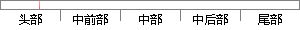

标记语言，是以文本为主，将文本和其他信息结合起来，体现文档的结构和细节处理的计算机文字编码。
片段位置图

相似结果|
相似片段 1：语言标记语言(MarkupLallguage，又名置标语言、标志语言)，是一种将文本以及文本相关的其他信息结合起来，展现出关于文档结构和数据处理细节的计算机文字编码【18】。简而言之，就是包含文本
相似片段 2：(MarkupLanguage)是一种将文本以及文本相关的其他信息结合起来，展现出关于文档结构和数据处理细节的计算机文字编码。目前广泛使用的标记语言是超文本标记语言(HyperTextMarkupLanguage，HTML)和可扩展标记语言(eXtensibleMarkupLanguage，XML)。
相似片段 3：与数据处理的具体细节的电脑编码。标记语言，是一种将文本以及文本相关的其他信息结合起来，展现出关于文档结构和数据处理细节的电脑文字编码。单证可以通过标记语言来描述，也可以通过文档定义的形式表达，还可以通过
相似片段 4：)以及文本相关的其他信息结合起来，展现出关于文档结构和数据处理细节的电脑文字编码。对于初学者来说．只需要理解标记语言其实是用来表示信息的一种符号语言。其次，我们接触比较多的一种标记语言HTML。当然学习
相似片段 5：(WITSML)标记语言(MarkupLanguage)是一种将文本以及与文本相关的其他信息结合起来，展现文档结构和数据处理细节的电脑文字编码。标记语言广泛应用于网页和网络应用程序。井场信息传输标准标记语言
相似片段 6：(markuplanguage)。标记语言，也称置标语言，是一种将文本或其他文本相关的其他信息结合起来，展现出关于文档结构和数据处理的计算机文字编码。标记语言是拥有一套标记标签(markuptag
相似片段 7：的？其中，需要用到标记语言(Markup Language)。标记语言(置标语言)是一种计算机文字编码，它将文本以及和文本相关的信息放到一起，用于展现文档结构和数据处理细节相关的信息。标记语言是基于源代码
|
※ 片段修改建议 ※
近似词参考：- 标记：标识表记标帜 标志 符号
- 语言：说话
- 是以：因此
- 体现：表现
- 结构：布局 构造
- 处理：处置 处置惩罚
- 文字：笔墨
系统自动生成语句：标识表记标帜说话，因此文本为主，将文本和其他信息结合起来，表现文档的布局和细节处置的计算机笔墨编码。
注：本片段修改建议为系统自动生成，仅供参考。